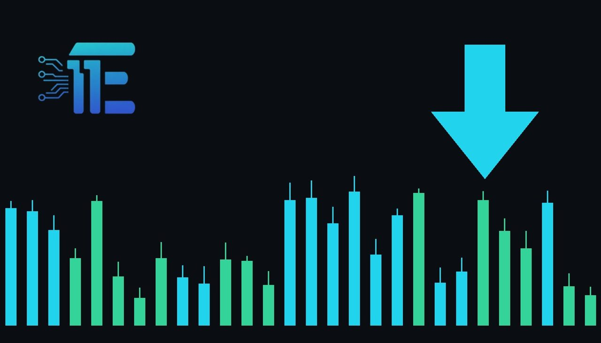

Gold Slides Below $4,000 as Inflation Worries Mountមាសធ្លាក់ចុះក្រោម 4,000 ដុល្លារ ដោយសារការព្រួយបារម្ភពីអតិផរណាកើនឡើង
XAU/USD impact: ▼ Bearishផលប៉ះពាល់លើ XAU/USD: ▼ ធ្លាក់

Gold retreated below $4,000 after dropping more than 3% over October amid persistent inflation worries. Rising energy costs and geopolitical tension continue to shape sentiment for bullion traders.
មាសបានធ្លាក់ចុះក្រោម 4,000 ដុល្លារ បន្ទាប់ពីបានធ្លាក់ចុះជាង 3% ក្នុងខែតុលា ដោយសារការព្រួយបារម្ភពីអតិផរណា។ ការកើនឡើងថ្លៃថាមពល និងភាពតានតឹងភូមិសាស្ត្រនយោបាយកំពុងបន្តជះឥទ្ធិពលលើទីផ្សារមាស។
Gold prices declined below the $4,000 level, marking a drop of more than 3% across the month of October. The precious metal faced persistent downward pressure as heightened inflation concerns weighed heavily on investor sentiment across global markets.
តម្លៃមាសបានធ្លាក់ចុះក្រោមបន្ទាត់ 4,000 ដុល្លារ ដោយបានបញ្ចប់ខែតុលាជាមួយនឹងការធ្លាក់ចុះជាង 3%។ លោហធាតុមានតម្លៃមួយនេះបានប្រឈមមុខនឹងសម្ពាធលក់ជាបន្តបន្ទាប់ ខណៈដែលការព្រួយបារម្ភកាន់តែខ្លាំងអំពីអតិផរណាបានដាក់បន្ទុកយ៉ាងខ្លាំងលើអារម្មណ៍វិនិយោគិននៅទូទាំងទីផ្សារសកល។
A primary catalyst behind the pressure on bullion has been elevated energy costs stemming from renewed fighting in the Middle East. Oil prices advanced amid indications that Washington could resume military strikes against Iran following next week's U.S. midterm elections, keeping energy markets tense and sustaining price pressures.
កត្តាជំរុញចម្បងមួយនៅពីក្រោយសម្ពាធលើមាស គឺការកើនឡើងនៃថ្លៃដើមថាមពលដែលបណ្តាលមកពីការប្រយុទ្ធគ្នាសារជាថ្មីនៅមជ្ឈិមបូព៌ា។ តម្លៃប្រេងបានកើនឡើងចំពេលមានសញ្ញាបង្ហាញថា ទីក្រុង Washington អាចនឹងបន្តការវាយប្រហារយោធាប្រឆាំងនឹងប្រទេស Iran ឡើងវិញ បន្ទាប់ពីការបោះឆ្នោតពាក់កណ្តាលអាណត្តិរបស់សហរដ្ឋអាមេរិកនៅសប្តាហ៍ក្រោយ ដែលធ្វើឱ្យទីផ្សារថាមពលស្ថិតក្នុងភាពតានតឹង។
This dynamic affects XAU/USD through competing market channels. Although geopolitical instability and military conflicts normally generate safe-haven buying for bullion, surging energy costs simultaneously amplify worries over persistent inflation. When inflation concerns mount, financial markets often anticipate that monetary policy must remain tighter for longer, which diminishes the relative appeal of holding non-yielding gold.
ស្ថានភាពនេះជះឥទ្ធិពលដល់គូជួញដូរ XAU/USD តាមរយៈយន្តការទីផ្សារប្រកួតប្រជែងគ្នា។ ទោះបីជាអស្ថិរភាពភូមិសាស្ត្រនយោបាយ និងជម្លោះយោធាជាធម្មតាបង្កើតតម្រូវការទិញមាសសម្រាប់ទ្រព្យសម្បត្តិសុវត្ថិភាពក៏ដោយ ការហក់ឡើងនៃថ្លៃថាមពលក៏បានបង្កើនការព្រួយបារម្ភអំពីអតិផរណាដែលអូសបន្លាយផងដែរ។ នៅពេលដែលការព្រួយបារម្ភអំពីអតិផរណាកើនឡើង ទីផ្សារហិរញ្ញវត្ថុតែងតែរំពឹងថា អត្រាការប្រាក់អាចនឹងត្រូវរក្សាទុកក្នុងកម្រិតខ្ពស់យូរជាងមុន ដែលកាត់បន្ថយភាពទាក់ទាញនៃមាសដែលមិនផ្តល់ផលប័ត្រ។
Under typical market conditions, bullion could receive support if escalating geopolitical risks and conflict in the Middle East trigger stronger flows into safe-haven stores of value. On the other hand, if elevated oil prices continue to fuel inflation concerns and keep upward pressure on borrowing costs, gold could experience additional headwinds below the $4,000 mark.
ក្រោមលក្ខខណ្ឌទីផ្សារទូទៅ មាសអាចទទួលបានការគាំទ្រប្រសិនបើហានិភ័យភូមិសាស្ត្រនយោបាយដែលកើនឡើង និងជម្លោះនៅមជ្ឈិមបូព៌ាជំរុញឱ្យមានលំហូរកាន់តែខ្លាំងចូលទៅក្នុងទ្រព្យសម្បត្តិសុវត្ថិភាព។ ផ្ទុយទៅវិញ ប្រសិនបើតម្លៃប្រេងខ្ពស់នៅតែបន្តជំរុញការព្រួយបារម្ភអំពីអតិផរណា និងរក្សាសម្ពាធលើថ្លៃដើមកម្ចី នោះមាសអាចប្រឈមមុខនឹងសម្ពាធធ្លាក់ចុះបន្ថែមទៀតនៅក្រោមបន្ទាត់ 4,000 ដុល្លារ។
Moving forward, traders are watching developments surrounding potential U.S. military strikes against Iran after next week's midterm elections. Observers will also track whether crude oil and broader energy prices stay elevated, as these price pressures remain central to shaping inflation expectations and the near-term path for bullion.
ទៅមុខទៀត អ្នកជួញដូរកំពុងតាមដានយ៉ាងដិតដល់នូវការវិវឌ្ឍជុំវិញលទ្ធភាពនៃការវាយប្រហារយោធារបស់សហរដ្ឋអាមេរិកប្រឆាំងនឹង Iran បន្ទាប់ពីការបោះឆ្នោតពាក់កណ្តាលអាណត្តិនៅសប្តាហ៍ក្រោយ។ ទីផ្សារក៏នឹងតាមដានផងដែរថាតើតម្លៃប្រេងឆៅ និងថាមពលទូទៅនៅតែបន្តស្ថិតក្នុងកម្រិតខ្ពស់ឬយ៉ាងណា ពីព្រោះសម្ពាធថ្លៃទាំងនេះនៅតែជាចំណុចកណ្តាលក្នុងការកំណត់ការរំពឹងទុកលើអតិផរណា និងទិសដៅរបស់មាស។
Key takeawaysចំណុចសំខាន់ៗ
- Gold dropped over 3% in October, falling below the key $4,000 level.
- មាសបានធ្លាក់ចុះជាង 3% ក្នុងខែតុលា ដោយបានធ្លាក់ចុះក្រោមបន្ទាត់ 4,000 ដុល្លារ។
- Elevated energy prices from Middle East fighting fueled renewed inflation concerns.
- ថ្លៃថាមពលខ្ពស់ពីការប្រយុទ្ធគ្នានៅមជ្ឈិមបូព៌ាបានជំរុញឱ្យមានការព្រួយបារម្ភជាថ្មីអំពីអតិផរណា។
- Oil rose on signs Washington may resume military strikes against Iran after midterm elections.
- តម្លៃប្រេងបានកើនឡើងចំពេលមានសញ្ញាថា Washington អាចបន្តការវាយប្រហារយោធាលើ Iran ក្រោយការបោះឆ្នោតពាក់កណ្តាលអាណត្តិ។
Original commentary by THE MARKET CODE, based on public reporting from Yahoo! Finance: GC=F News. Written with the help of AI. Educational only, not financial advice.
មតិវិភាគដើមដោយ THE MARKET CODE ផ្អែកលើការរាយការណ៍សាធារណៈពី Yahoo! Finance: GC=F News។ សរសេរដោយមានជំនួយពី AI។ មាតិកាអប់រំប៉ុណ្ណោះ មិនមែនជាដំបូន្មានហិរញ្ញវត្ថុទេ។